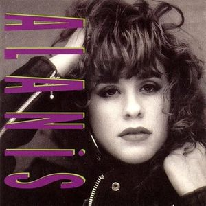

Welcome to Alanis Morissette's Page!
Discography
Alanis' Music
- Album 1: Alanis
- Published date: 1991
- Songs include: "Too Hot", "Walk Away", and "Feel Your Love"

Image of Alanis. Source: Wikipedia
- Album 2: Now Is The Time
- Published date: 1992
- Songs include: "An Emotion Away", and "No Apologies"
 Image of Now Is The Time. Source: Wikipedia
Image of Now Is The Time. Source: Wikipedia
- Album 3: Jagged Little Pill
- Published date: 1995
- Songs include: "You Oughta Know", "Hand In My Pocket", and her huge hit "Ironic"
 Image of Jagged Little Pill. Source: Wikipedia
Image of Jagged Little Pill. Source: Wikipedia